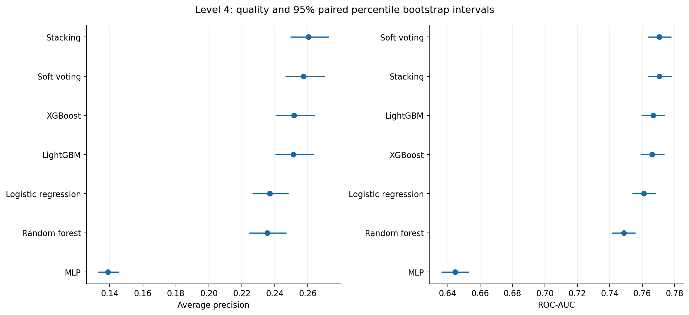
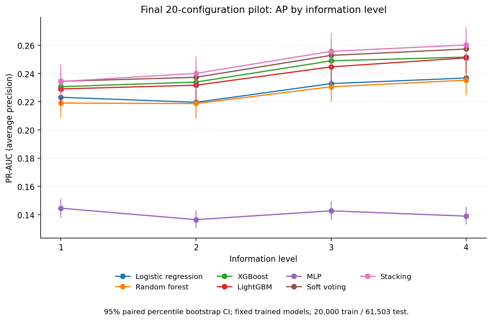
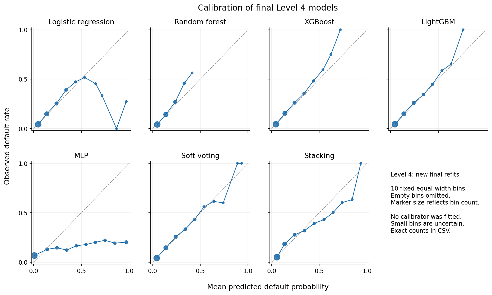

A total of 28 final fits were completed on the same 20 000 clients after selecting parameters from all 1680 CV results. Each model was evaluated on the existing 61 503 test clients. Preprocessing was fitted only on train; parameters and thresholds were not changed using test.
RQ1: the highest point estimate of AP at Level 4 is Stacking (0.260296); the lowest log-loss is Soft voting (0.242529). These are descriptive test results, not evidence of superiority across all metrics.
DeLong, ROC-AUC versus LR, Bonferroni p <0.05: LightGBM: Δ=+0.005823, p_adj=0.0051437; XGBoost: Δ=+0.005272, p_adj=0.016282; Soft voting: Δ=+0.009772, p_adj=6.6347e-21; Stacking: Δ=+0.009755, p_adj=9.7746e-13; MLP: Δ=-0.116268, p_adj=9.3294e-178; Random forest: Δ=-0.012260, p_adj=1.9289e-07. The family includes six comparisons; this test does not assess AP.
RQ2, ΔAP Level 4 − Level 1 [95% CI]: Logistic regression +0.01366 [+0.00729, +0.02049]; LightGBM +0.02205 [+0.01565, +0.02835]; XGBoost +0.02100 [+0.01435, +0.02759]; Soft voting +0.02290 [+0.01667, +0.02930]; Stacking +0.02592 [+0.01962, +0.03217]; MLP -0.00563 [-0.01209, +0.00050]; Random forest +0.01623 [+0.01103, +0.02151].
MLP, actual final fits: L1: n_iter=300/300, training loss=0.12870, CV log-loss=0.38851, test log-loss=0.37120; L2: n_iter=300/300, training loss=0.08884, CV log-loss=0.47951, test log-loss=0.47086; L3: n_iter=300/300, training loss=0.05724, CV log-loss=0.56939, test log-loss=0.54814; L4: n_iter=300/300, training loss=0.03376, CV log-loss=0.63940, test log-loss=0.69104. MLP settings are retained: max_iter=300, tol=0.0001, n_iter_no_change=20; the detailed audit is stored alongside the combined CV results.
Before final training, the MLP audit found no structural Pipeline error or leakage of validation statistics: all checked matrices were finite. Selected configuration No.13 reached max_iter=300 in all 12 saved CV fits. A low training objective alongside high CV log-loss is consistent with overfitting; rare extreme values after scaling may increase instability. This is a diagnostic explanation, not proof of a single cause. Clipping, changes to regularization and early stopping were not introduced. MLP loss_ includes regularization and is not a separate estimate of train log-loss.
The previous five-configuration search results are preserved separately. comparison_to_preserved_5config_preresults.csv shows descriptive changes in the new metrics; old Pipelines were not substituted for the new final models. This module only evaluated saved probabilities.
| Model | AP | ROC-AUC | Log-loss | Brier |
|---|---|---|---|---|
| Logistic regression | 0.2368\n[0.2264, 0.2484] | 0.7609\n[0.7539, 0.7683] | 0.2487\n[0.2440, 0.2542] | 0.0681\n[0.0666, 0.0697] |
| Random forest | 0.2353\n[0.2245, 0.2469] | 0.7486\n[0.7413, 0.7559] | 0.2499\n[0.2455, 0.2545] | 0.0686\n[0.0671, 0.0701] |
| XGBoost | 0.2517\n[0.2403, 0.2644] | 0.7662\n[0.7590, 0.7738] | 0.2443\n[0.2396, 0.2491] | 0.0675\n[0.0659, 0.0690] |
| LightGBM | 0.2511\n[0.2402, 0.2637] | 0.7667\n[0.7594, 0.7741] | 0.2441\n[0.2396, 0.2490] | 0.0674\n[0.0659, 0.0690] |
| MLP | 0.1389\n[0.1330, 0.1454] | 0.6446\n[0.6360, 0.6530] | 0.6910\n[0.6714, 0.7114] | 0.1039\n[0.1017, 0.1062] |
| Soft voting | 0.2574\n[0.2463, 0.2702] | 0.7707\n[0.7637, 0.7780] | 0.2425\n[0.2379, 0.2474] | 0.0671\n[0.0656, 0.0687] |
| Stacking | 0.2603\n[0.2493, 0.2727] | 0.7707\n[0.7636, 0.7783] | 0.2485\n[0.2437, 0.2533] | 0.0679\n[0.0663, 0.0695] |
| Model | Level 1 | Level 2 | Level 3 | Level 4 |
|---|---|---|---|---|
| Logistic regression | 0.2232\n[0.2130, 0.2342] | 0.2196\n[0.2095, 0.2306] | 0.2329\n[0.2226, 0.2452] | 0.2368\n[0.2264, 0.2484] |
| Random forest | 0.2191\n[0.2085, 0.2300] | 0.2187\n[0.2079, 0.2296] | 0.2306\n[0.2199, 0.2418] | 0.2353\n[0.2245, 0.2469] |
| XGBoost | 0.2307\n[0.2201, 0.2428] | 0.2339\n[0.2227, 0.2459] | 0.2490\n[0.2379, 0.2615] | 0.2517\n[0.2403, 0.2644] |
| LightGBM | 0.2291\n[0.2186, 0.2403] | 0.2317\n[0.2207, 0.2438] | 0.2447\n[0.2344, 0.2573] | 0.2511\n[0.2402, 0.2637] |
| MLP | 0.1445\n[0.1380, 0.1511] | 0.1364\n[0.1305, 0.1430] | 0.1427\n[0.1363, 0.1496] | 0.1389\n[0.1330, 0.1454] |
| Soft voting | 0.2345\n[0.2239, 0.2464] | 0.2373\n[0.2263, 0.2490] | 0.2529\n[0.2414, 0.2659] | 0.2574\n[0.2463, 0.2702] |
| Stacking | 0.2344\n[0.2236, 0.2463] | 0.2401\n[0.2287, 0.2521] | 0.2558\n[0.2441, 0.2689] | 0.2603\n[0.2493, 0.2727] |
| Model | Delta AP L2-L1 | Delta AP L3-L1 | Delta AP L4-L1 |
|---|---|---|---|
| Logistic regression | -0.0036\n[-0.0075, 0.0001] | 0.0097\n[0.0043, 0.0151] | 0.0137\n[0.0073, 0.0205] |
| Random forest | -0.0003\n[-0.0039, 0.0029] | 0.0116\n[0.0074, 0.0155] | 0.0162\n[0.0110, 0.0215] |
| XGBoost | 0.0033\n[-0.0011, 0.0076] | 0.0183\n[0.0132, 0.0230] | 0.0210\n[0.0143, 0.0276] |
| LightGBM | 0.0027\n[-0.0013, 0.0065] | 0.0156\n[0.0102, 0.0207] | 0.0220\n[0.0156, 0.0284] |
| MLP | -0.0081\n[-0.0141, -0.0021] | -0.0019\n[-0.0092, 0.0047] | -0.0056\n[-0.0121, 0.0005] |
| Soft voting | 0.0028\n[-0.0011, 0.0065] | 0.0184\n[0.0128, 0.0239] | 0.0229\n[0.0167, 0.0293] |
| Stacking | 0.0058\n[0.0018, 0.0094] | 0.0214\n[0.0156, 0.0267] | 0.0259\n[0.0196, 0.0322] |
| Model | Delta AP L2-L1 | Delta AP L3-L2 | Delta AP L4-L3 |
|---|---|---|---|
| Logistic regression | -0.0036\n[-0.0075, 0.0001] | 0.0133\n[0.0093, 0.0173] | 0.0040\n[0.0001, 0.0077] |
| Random forest | -0.0003\n[-0.0039, 0.0029] | 0.0119\n[0.0088, 0.0148] | 0.0047\n[0.0008, 0.0093] |
| XGBoost | 0.0033\n[-0.0011, 0.0076] | 0.0151\n[0.0100, 0.0201] | 0.0027\n[-0.0030, 0.0085] |
| LightGBM | 0.0027\n[-0.0013, 0.0065] | 0.0130\n[0.0089, 0.0173] | 0.0064\n[0.0014, 0.0113] |
| MLP | -0.0081\n[-0.0141, -0.0021] | 0.0063\n[0.0007, 0.0122] | -0.0038\n[-0.0095, 0.0017] |
| Soft voting | 0.0028\n[-0.0011, 0.0065] | 0.0155\n[0.0107, 0.0199] | 0.0045\n[0.0000, 0.0091] |
| Stacking | 0.0058\n[0.0018, 0.0094] | 0.0156\n[0.0110, 0.0201] | 0.0045\n[-0.0002, 0.0091] |
| Model | Reference | Delta AP |
|---|---|---|
| Random forest | Logistic regression | -0.0015\n[-0.0086, 0.0053] |
| XGBoost | Logistic regression | 0.0148\n[0.0075, 0.0214] |
| LightGBM | Logistic regression | 0.0143\n[0.0071, 0.0210] |
| MLP | Logistic regression | -0.0979\n[-0.1071, -0.0894] |
| Soft voting | Logistic regression | 0.0206\n[0.0166, 0.0242] |
| Stacking | Logistic regression | 0.0235\n[0.0179, 0.0286] |
| Model | Delta ROC-AUC | p (raw) | p (Bonferroni) | Reject at 0.05 |
|---|---|---|---|---|
| LightGBM | +0.00582 | 0.00085728 | 0.0051437 | Yes |
| XGBoost | +0.00527 | 0.0027137 | 0.016282 | Yes |
| Soft voting | +0.00977 | 1.1058e-21 | 6.6347e-21 | Yes |
| Stacking | +0.00975 | 1.6291e-13 | 9.7746e-13 | Yes |
| MLP | -0.11627 | 1.5549e-178 | 9.3294e-178 | Yes |
| Random forest | -0.01226 | 3.2149e-08 | 1.9289e-07 | Yes |
| Model | Threshold | Profit (m) | Approval (%) | Gender gap (pp) | Age gap (pp) | G/A gap <=5pp |
|---|---|---|---|---|---|---|
| Logistic regression | 0.5000 | 0.838\n[0.834, 0.842] | 99.9\n[99.8, 99.9] | 0.01\n[0.00, 0.08] | 0.20\n[0.01, 0.43] | Yes/Yes |
| Random forest | 0.5000 | 0.839\n[0.834, 0.843] | 100.0\n[100.0, 100.0] | 0.00\n[0.00, 0.00] | 0.00\n[0.00, 0.00] | Yes/Yes |
| XGBoost | 0.5000 | 0.839\n[0.835, 0.843] | 99.8\n[99.8, 99.9] | 0.01\n[0.00, 0.08] | 0.29\n[0.03, 0.58] | Yes/Yes |
| LightGBM | 0.5000 | 0.839\n[0.835, 0.843] | 99.8\n[99.7, 99.8] | 0.00\n[0.00, 0.09] | 0.34\n[0.06, 0.64] | Yes/Yes |
| MLP | 0.5000 | 0.801\n[0.796, 0.805] | 93.7\n[93.5, 93.9] | 2.03\n[1.61, 2.46] | 2.76\n[1.60, 3.93] | Yes/Yes |
| Soft voting | 0.5000 | 0.839\n[0.835, 0.843] | 99.6\n[99.6, 99.7] | 0.09\n[0.01, 0.19] | 0.54\n[0.19, 0.93] | Yes/Yes |
| Stacking | 0.5000 | 0.839\n[0.835, 0.843] | 99.1\n[99.0, 99.1] | 0.36\n[0.20, 0.53] | 1.94\n[1.31, 2.61] | Yes/Yes |
| Model | Threshold | Profit (m) | Approval (%) | Gender gap (pp) | Age gap (pp) | G/A gap <=5pp |
|---|---|---|---|---|---|---|
| Logistic regression | 0.5000 | 0.518\n[0.506, 0.530] | 99.9\n[99.8, 99.9] | 0.01\n[0.00, 0.08] | 0.20\n[0.01, 0.43] | Yes/Yes |
| Logistic regression | 0.1667 | 0.577\n[0.566, 0.588] | 89.7\n[89.5, 89.9] | 3.37\n[2.86, 3.92] | 18.65\n[16.97, 20.35] | Yes/No |
| Random forest | 0.5000 | 0.516\n[0.503, 0.528] | 100.0\n[100.0, 100.0] | 0.00\n[0.00, 0.00] | 0.00\n[0.00, 0.00] | Yes/Yes |
| Random forest | 0.1667 | 0.577\n[0.566, 0.587] | 89.2\n[89.0, 89.5] | 1.64\n[1.15, 2.21] | 18.38\n[16.68, 20.18] | Yes/No |
| XGBoost | 0.5000 | 0.520\n[0.508, 0.532] | 99.8\n[99.8, 99.9] | 0.01\n[0.00, 0.08] | 0.29\n[0.03, 0.58] | Yes/Yes |
| XGBoost | 0.1667 | 0.584\n[0.573, 0.594] | 89.6\n[89.3, 89.8] | 3.26\n[2.74, 3.77] | 18.35\n[16.67, 20.20] | Yes/No |
| LightGBM | 0.5000 | 0.521\n[0.509, 0.533] | 99.8\n[99.7, 99.8] | 0.00\n[0.00, 0.09] | 0.34\n[0.06, 0.64] | Yes/Yes |
| LightGBM | 0.1667 | 0.586\n[0.575, 0.596] | 89.0\n[88.8, 89.3] | 3.29\n[2.75, 3.78] | 18.09\n[16.40, 20.04] | Yes/No |
| MLP | 0.5000 | 0.528\n[0.516, 0.540] | 93.7\n[93.5, 93.9] | 2.03\n[1.61, 2.46] | 2.76\n[1.60, 3.93] | Yes/Yes |
| MLP | 0.1667 | 0.521\n[0.509, 0.532] | 89.1\n[88.8, 89.3] | 3.35\n[2.79, 3.89] | 5.96\n[4.48, 7.41] | Yes/No |
| Soft voting | 0.5000 | 0.524\n[0.512, 0.536] | 99.6\n[99.6, 99.7] | 0.09\n[0.01, 0.19] | 0.54\n[0.19, 0.93] | Yes/Yes |
| Soft voting | 0.1667 | 0.588\n[0.578, 0.598] | 88.4\n[88.1, 88.6] | 4.45\n[3.88, 5.00] | 18.11\n[16.48, 19.87] | Yes/No |
| Stacking | 0.5000 | 0.535\n[0.523, 0.546] | 99.1\n[99.0, 99.1] | 0.36\n[0.20, 0.53] | 1.94\n[1.31, 2.61] | Yes/Yes |
| Stacking | 0.1667 | 0.580\n[0.569, 0.591] | 92.6\n[92.4, 92.8] | 3.04\n[2.60, 3.50] | 13.41\n[11.91, 15.02] | Yes/No |
| Model | Threshold | Profit (m) | Approval (%) | Gender gap (pp) | Age gap (pp) | G/A gap <=5pp |
|---|---|---|---|---|---|---|
| Logistic regression | 0.5000 | 0.118\n[0.095, 0.140] | 99.9\n[99.8, 99.9] | 0.01\n[0.00, 0.08] | 0.20\n[0.01, 0.43] | Yes/Yes |
| Logistic regression | 0.0909 | 0.393\n[0.379, 0.408] | 69.8\n[69.5, 70.2] | 6.69\n[5.87, 7.48] | 33.87\n[31.94, 35.91] | No/No |
| Random forest | 0.5000 | 0.112\n[0.089, 0.135] | 100.0\n[100.0, 100.0] | 0.00\n[0.00, 0.00] | 0.00\n[0.00, 0.00] | Yes/Yes |
| Random forest | 0.0909 | 0.378\n[0.365, 0.391] | 66.3\n[65.9, 66.7] | 6.33\n[5.55, 7.15] | 31.75\n[29.71, 33.75] | No/No |
| XGBoost | 0.5000 | 0.122\n[0.099, 0.144] | 99.8\n[99.8, 99.9] | 0.01\n[0.00, 0.08] | 0.29\n[0.03, 0.58] | Yes/Yes |
| XGBoost | 0.0909 | 0.400\n[0.385, 0.415] | 72.8\n[72.4, 73.1] | 7.01\n[6.27, 7.75] | 32.02\n[29.98, 34.07] | No/No |
| LightGBM | 0.5000 | 0.124\n[0.102, 0.146] | 99.8\n[99.7, 99.8] | 0.00\n[0.00, 0.09] | 0.34\n[0.06, 0.64] | Yes/Yes |
| LightGBM | 0.0909 | 0.400\n[0.385, 0.414] | 73.0\n[72.7, 73.4] | 7.08\n[6.35, 7.85] | 31.32\n[29.22, 33.40] | No/No |
| MLP | 0.5000 | 0.188\n[0.166, 0.209] | 93.7\n[93.5, 93.9] | 2.03\n[1.61, 2.46] | 2.76\n[1.60, 3.93] | Yes/Yes |
| MLP | 0.0909 | 0.226\n[0.205, 0.245] | 86.2\n[86.0, 86.5] | 3.82\n[3.19, 4.40] | 7.60\n[6.03, 9.13] | Yes/No |
| Soft voting | 0.5000 | 0.131\n[0.109, 0.153] | 99.6\n[99.6, 99.7] | 0.09\n[0.01, 0.19] | 0.54\n[0.19, 0.93] | Yes/Yes |
| Soft voting | 0.0909 | 0.407\n[0.392, 0.421] | 71.9\n[71.5, 72.2] | 7.81\n[7.03, 8.59] | 30.95\n[28.93, 32.98] | No/No |
| Stacking | 0.5000 | 0.155\n[0.132, 0.176] | 99.1\n[99.0, 99.1] | 0.36\n[0.20, 0.53] | 1.94\n[1.31, 2.61] | Yes/Yes |
| Stacking | 0.0909 | 0.391\n[0.374, 0.406] | 80.9\n[80.6, 81.2] | 6.26\n[5.59, 6.91] | 24.87\n[22.90, 26.85] | No/No |
| Model | Missed defaults (FN) | False rejections (FP) | Precision | Recall | F1 |
|---|---|---|---|---|---|
| Logistic regression | 4925 | 49 | 0.4494 | 0.0081 | 0.0158 |
| Random forest | 4965 | 0 | -- | 0.0000 | 0.0000 |
| XGBoost | 4897 | 43 | 0.6126 | 0.0137 | 0.0268 |
| LightGBM | 4883 | 54 | 0.6029 | 0.0165 | 0.0322 |
| MLP | 4184 | 3118 | 0.2003 | 0.1573 | 0.1762 |
| Soft voting | 4839 | 93 | 0.5753 | 0.0254 | 0.0486 |
| Stacking | 4674 | 284 | 0.5061 | 0.0586 | 0.1051 |



| model | level | n_iter_ | max_iter | tol | n_iter_no_change | loss_curve_points | final_training_loss | best_cv_log_loss | test_log_loss | test_ap | warning_count_final_fit |
|---|---|---|---|---|---|---|---|---|---|---|---|
| mlp | 1 | 300 | 300 | 0.0001 | 20 | 300 | 0.128704 | 0.388510 | 0.371204 | 0.144538 | 1 |
| mlp | 2 | 300 | 300 | 0.0001 | 20 | 300 | 0.088844 | 0.479511 | 0.470858 | 0.136435 | 1 |
| mlp | 3 | 300 | 300 | 0.0001 | 20 | 300 | 0.057237 | 0.569388 | 0.548138 | 0.142688 | 1 |
| mlp | 4 | 300 | 300 | 0.0001 | 20 | 300 | 0.033757 | 0.639396 | 0.691036 | 0.138913 | 1 |
Checked.